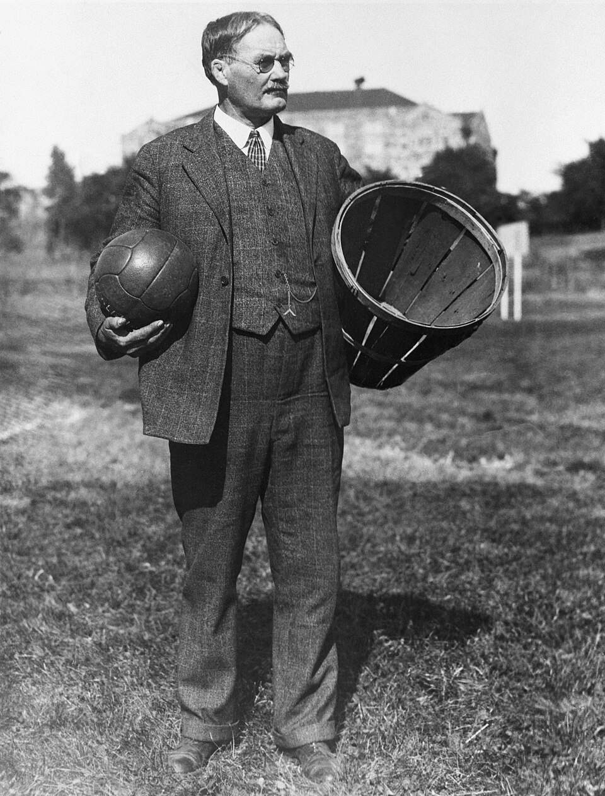
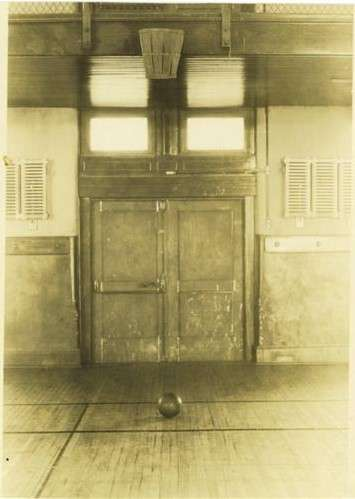
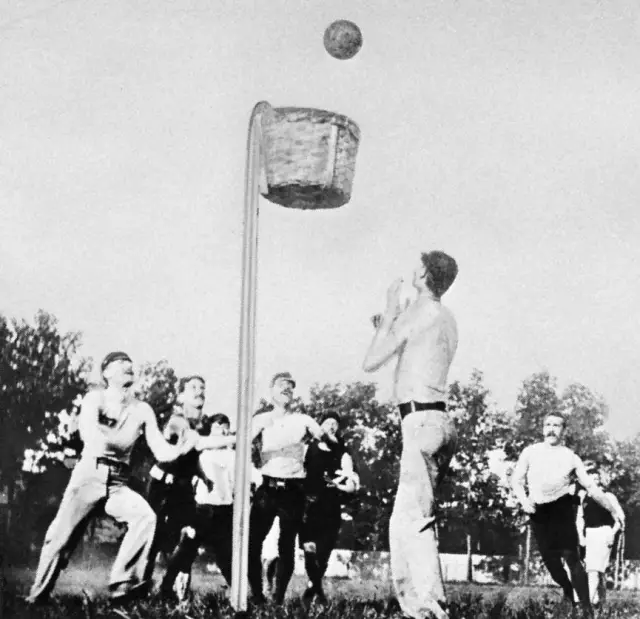
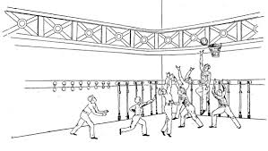
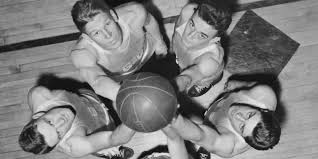
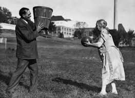
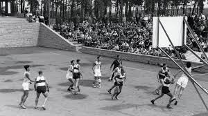

A história do basquete começa em dezembro de 1891, quando o professor canadense James
Naismith, que trabalhava na Associação Cristã de Moços (ACM) de Springfield, nos Estados Unidos, recebeu
a tarefa de criar um novo esporte. O diretor da instituição queria uma atividade que pudesse ser
praticada em ambiente fechado durante o inverno rigoroso, já que os esportes ao ar livre se tornavam
impraticáveis devido ao frio e à neve. Além disso, era importante que o novo jogo fosse divertido,
estimulante e menos violento do que os esportes populares da época, como o futebol americano e o rugby.

James Naismith segurando uma bola antiga e a primeira cesta de pêssego, 1891.
Buscando uma solução, Naismith analisou quais elementos tornavam um jogo seguro e
interessante. Ele
concluiu que o objetivo deveria estar localizado acima da cabeça dos jogadores, para evitar colisões e
contato físico excessivo. Foi então que teve a ideia de pendurar duas cestas de pêssego nas extremidades
do ginásio. Essas cestas eram fechadas embaixo, de modo que, sempre que alguém marcava pontos, o jogo
precisava ser pausado para alguém retirar a bola com uma escada — algo que só mudaria mais tarde, com a
criação do aro metálico com rede.
Naismith também estabeleceu 13 regras fundamentais para garantir um jogo organizado e
seguro. Nessas
regras, não havia drible inicialmente; os jogadores só podiam avançar a bola por meio de passes. O
objetivo era incentivar a cooperação, reduzir o individualismo e evitar correrias perigosas dentro do
ginásio.
A bola usada nas primeiras partidas era semelhante à de futebol, pois ainda não existia uma
bola específica para o novo esporte.
A primeira partida de basquete da história ocorreu com estudantes da ACM, e, apesar de
simples, a
novidade chamou a atenção pela agilidade, estratégia e dinamismo. A combinação de um objetivo elevado,
regras claras e um ambiente seguro fez com que o jogo se tornasse muito popular rapidamente. A criação
de Naismith, planejada para resolver um problema local, acabou se transformando em um dos esportes mais
praticados e admirados do mundo.

Local onde o basquete foi criado, Springfield College, 1891.

Representação da primeira partida de basquete da história.

Registro histórico das primeiras regras e da quadra original.Foto do modelo antigo de bola.
EXPANSÃO
Depois de ser criado em 1891, o basquete começou a se expandir de forma muito rápida dentro
dos Estados
Unidos. As escolas e universidades adotaram o novo esporte quase imediatamente, porque ele era fácil de
organizar, exigia pouco espaço e podia ser praticado durante todo o ano, inclusive nos meses mais frios.
A própria Associação Cristã de Moços (ACM), onde o jogo nasceu, teve um papel fundamental nesse
processo, pois possuía unidades em vários estados e até em outros países, ajudando a difundir o basquete
para além das fronteiras americanas.

Primeiros jogos internacionais de basquete no início do século XX.
No início do século XX, treinadores, missionários e estudantes ligados à ACM levaram o
basquete para
países da América Latina, como Brasil, Argentina e Uruguai, além de diversas regiões da Europa e da
Ásia. A expansão foi tão rápida que, em apenas algumas décadas, o esporte já era praticado em centros
esportivos, escolas militares e clubes recreativos em vários continentes. Essa popularidade crescente
exigiu uma organização maior, e foi assim que, em 1932, surgiu a FIBA (Federação Internacional de
Basquetebol), com o objetivo de padronizar regras, promover competições internacionais e representar o
esporte oficialmente no cenário mundial.

Basquete ainda com cestas de pêssego durante sua expansão global.
A criação da FIBA marcou o início da era internacional do basquete. Com regras unificadas, o
esporte
ganhou força e passou a ser reconhecido globalmente, tornando-se um dos mais praticados do planeta. A
partir daí, o basquete começou a aparecer em campeonatos continentais, torneios mundiais e, pouco após
isso, entraria também no programa olímpico — consolidando ainda mais sua presença global.
BASQUETE NAS COMPETIÇÕES
Com o crescimento do esporte em diversos países, o basquete passou naturalmente a ser
incluído em
competições regionais, nacionais e internacionais. A primeira grande conquista nesse sentido foi sua
entrada oficial nos Jogos Olímpicos, em 1936, durante a edição de Berlim. O torneio olímpico masculino
foi o primeiro evento esportivo de basquete reconhecido mundialmente e marcou um passo decisivo na
consolidação do esporte. Já o basquete feminino entrou somente em 1976, nos Jogos de Montreal, ampliando
ainda mais a visibilidade da modalidade.
Além das Olimpíadas, outro marco importante foi a criação dos Campeonatos Mundiais
organizados pela
FIBA. O primeiro Mundial masculino aconteceu em 1950, na Argentina, e o primeiro feminino em 1953, no
Chile. Essas competições reuniam seleções de vários continentes, permitindo que o basquete se espalhasse
ainda mais pelo mundo e criando rivalidades históricas entre países.

Primeira participação oficial do basquete nos Jogos Olímpicos, 1936.
No campo profissional, o basquete ganhou enorme destaque com o surgimento da NBA, nos
Estados Unidos, em
1946. A liga se tornou rapidamente a competição mais forte, mais organizada e mais popular do planeta,
atraindo os melhores jogadores e influenciando todas as outras ligas ao redor do mundo. Em paralelo à
NBA, surgiram também ligas de grande importância em outros países, como a Euroliga na Europa,
responsável por reunir os principais clubes do continente em torneios de altíssimo nível técnico.
Nas Américas, Oceania, Ásia e África, cada continente passou a ter suas próprias competições
classificatórias e torneios regionais, como a Copa América de Basquete, o EuroBasket e a Copa Africana.
Esses torneios servem tanto para definir vagas em Mundiais e Olimpíadas quanto para fortalecer o esporte
em cada região. Todas essas competições, juntas, ajudaram o basquete a se transformar em um dos esportes
mais globais, organizados e acompanhados do mundo.